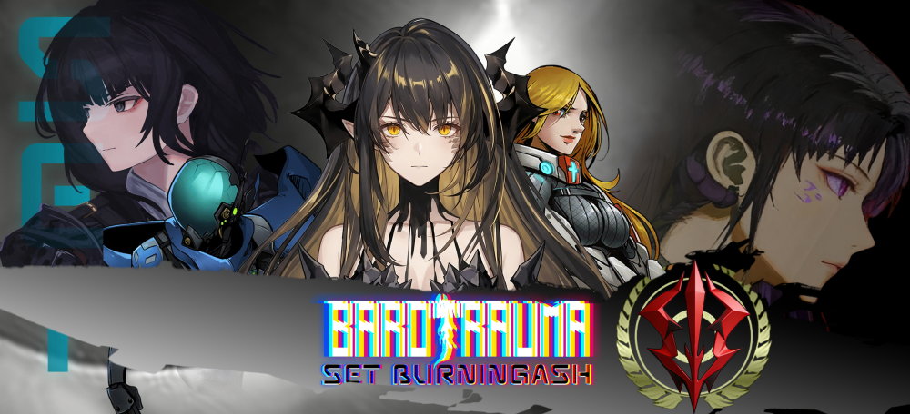
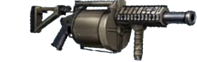
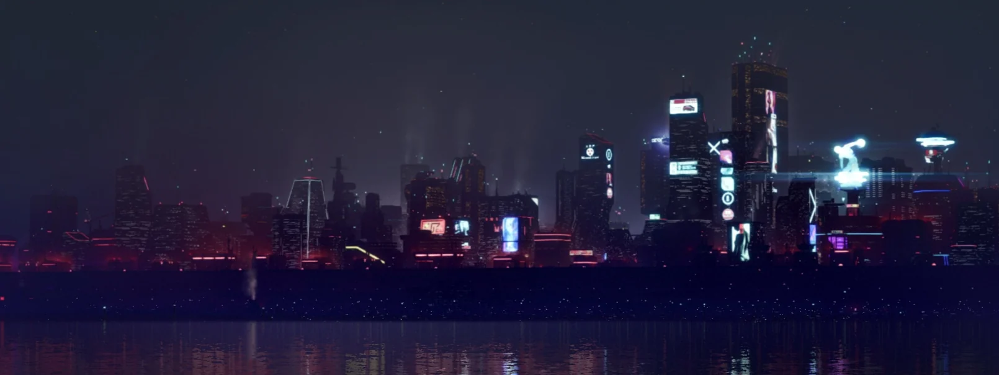
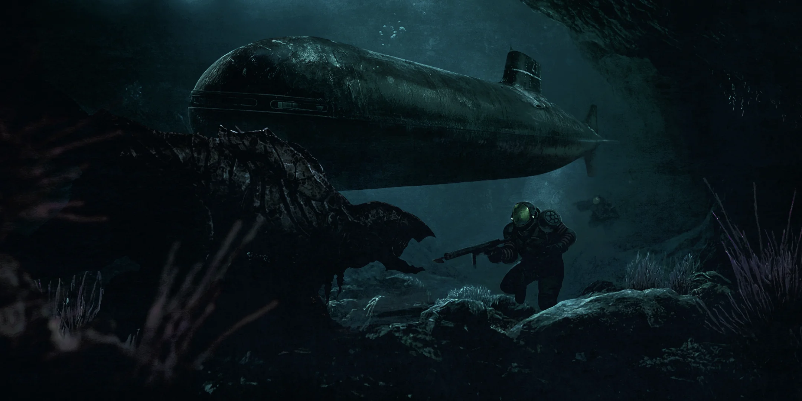

BAROTRAUMA MOD / SET PROJECTEUROPA · BELOW THE ICE
BURNINGASH燃烬
理解、认知宇宙时空的无限信息
干涉、改变实体世界的无穷能力

SET / VISUAL ARCHIVE — 001
01 / THE PROJECTSET BURNINGASH
Seek. Establish. Transcend.
意志重塑躯体。
余烬照亮深渊。
PLATFORMGLOBAL潜渊症/远行星号/群星/......
IDENTITYSET 燃烬综合内容模组
FOCUS破碎长空手触苍穹
02 / CORE SYSTEMSSELECT A MODULE
BEYOND THE BASELINE
内在意志，
重造外在表征。
选择一个系统，
查看燃烬的不同侧面。
CYB / AUGMENTATION● REC ARCHIVE / 01
HUMAN RECONSTRUCTION重构记录01
FIG. 01 / CYBERNETIC ARMNEURAL INTERFACE
SET / RESEARCH DIVISION身体只是意志的容器。
MODULE / 01重塑你的身体。
全新的义体系统、饰品系统、基因系统、身外身和更多配置。
自然进化只能用一个词来形容:失败,今天,我们将亲自定义成功。
ARM / EQUIPMENT▶ PLAY ARCHIVE / 02
INSTRUMENTS OF WILL意志载体02

FIG. 02 / WEAPON SYSTEMFIELD EQUIPMENT
SET / EQUIPMENT ARCHIVE掌握自我的命运。
MODULE / 02延续你的意志。
扩展武器与装备选择，近远程火力、身体装备、外骨骼、无人机与外设装备。
武器的进步应旨在终结战争。
SET / CLASSIFIED ARCHIVESTORY FRAGMENT / 03
RESTRICTED ACCESS
SECRET
FRONT
隐秘战线 ／ 尘封档案
TRANSMISSION / 07关于被尘封的故事。
SIGNAL LOST
MODULE / 03实践你的思想。
丰富的剧情扩展与站点扩展，更多的故事。
我们曾经团结一体，众志成城。而如今我们支离破碎，汝等之罪行永世铭记。
TRN / INTERNAL NETWORKROUTE ARCHIVE / 04
TRACE THE CONNECTION路径与回声
MODULE / 04行于你的道路。
全新的路径移动扩展、网络信息扩展，实现新的内置玩法，还有更多待探索内容。
当一个伟大的事件发生时，我们不得不问：这是结束的开始，还是开始的结束？
档案展示模组的设计方向与内容；可用功能和前置要求请以创意工坊当前发布说明为准。
03 / WORLD ARCHIVETRANSMISSION RECEIVED
SIGNALS FROM THE ABYSS
木卫二时空循环
SET设施海原都市
永恒的混沌螺旋
燃烬的视觉档案

ARCHIVE / 001穹顶都市永恒夜幕下的摇曳灯火。01

ARCHIVE / 002全新海域深空、失重、硫海与真正的深渊。02
NEXT DIVE / YOUR CALL
下潜?不，
向内进发。
在 Steam 创意工坊订阅模组，查看更新、前置需求与安装说明。